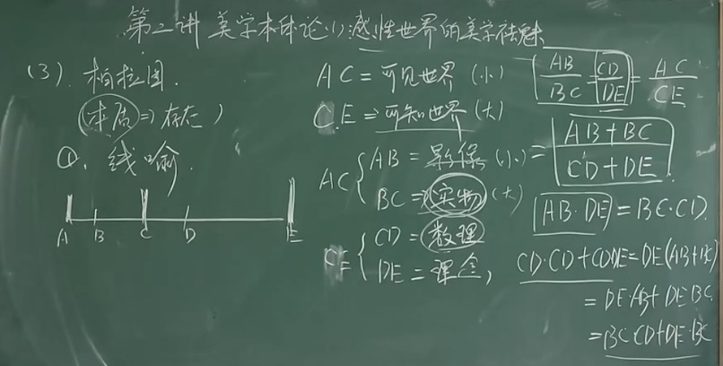

《美学原理》笔记
闲来无事，发现小破站里面讲授关于美学原理的课，授课老师是中央民族大学文学院的杨宁老师，讲挺好，潦草记了笔记。若说收获与感悟，就是各美其美，美美与共。
智：学以致用X——学以致智√
一、美学为何：美学的学科特点
美学：为什么（价值）是什么（学科）
1.美学：对审美现象的反思，≠评判
2.美学：对审美规律的探寻；looking for：规律背后的规律
3.美学：对审美文化的分析
二、美学为何：美学的学科性质
自然科学、社会科学、人文学科✔️
1.美学与自然科学
费希纳
2.美学与社会科学
历史性、社会性
美学——个体
社会科学——整体
3.美学与人文科学
美学≠人文科学
美学=人文学科
过程：主观介入——价值判断
对象：不具有实体性
结果：基于主观，无法验证
美学的研究对象
——1.美及美的规律（柏拉图，古典美学基本的确立方式）——BUG在于：先验设定了”美“是一种东西。
——2.艺术哲学：美——精神（黑格尔）；海德格尔《艺术的本源》演讲稿
——3.美感经验：审美经验、审美心理（心理学）
——4.人与现实的审美关系：认识论与伦理学，美学是认识世界的第三种方式——审美方式
三、审美关系的四个维度
核心（人）
人本身+文化+自然+社会
自身：心理美学
文化：艺术哲学
自然：环境美学
社会：社会美学、文化工业、政治美学（朗西埃、德里达）
美学本体论——第二讲 感性世界的美学祛魅
话题：吸引力法则、费洛蒙实验、《自私的基因（我们是基因的奴隶）》、腰臀比0.7
进化论美学学派（对称美学——携带好基因）
正门：哲学
【前提问题】
1.美学研究过程中：历史与逻辑统一问题
美——本质——存在方式——（哲学本体的问题）
美学史（西方美学史）
2.本体论问题：ontology
找区别于其他事物最本质的特征
概念：本质主义（20c前）、反本质主义（20c后）——解构
主观派、客观派之争
事实——对错、客观
感受——主观
审美——主观——寻求普遍性
美的规律与美的本质（古希腊）
1.毕达哥拉斯
世界的本质：数（现象背后存在规律）
美丑的区别：数是否和谐
美：数的和谐
黄金分割：0.618
2.苏格拉底
美：有用、合适
美：不是属性，是关系
美的事物：相对的、变化
美——不变
色诺芬《回忆录》
3.柏拉图
（本质决定存在）（直到后来的存在主义出现才有了改变）
1.线喻
CD=BC，即数理=实物

2.洞穴比喻（囚徒困境）
现象世界——反映
本质世界——真实
3.床喻
神造的床——理念（理念世界）
木匠的床——现实（理念世界的反映）
画家的床——现实的摹本（现实世界的反映）——摹本的摹本
《理想国》黄明泽讲的课
艺术远离感性——低级
艺术激起心中低劣情感
（艺术可以激发人的欲望）
艺术创作就是已最形象的方式绕过你的理性直接诉诸你的情感
（架空思维）
海子《日记》姐姐，今夜我不关心人类 我只想你
4.迷狂
美——理念（神灵附体）
蒙德里安
《大希庇阿斯篇》 美的事物VS 美本身
A、确立美的本质问题：美本身
B、美具有抽象、普遍、客观性
C、确立美学研究方向：数学
（美的本质偏向于理性，偏重客观）
美学本体论——主观轮兴起与感性学诞生
美学：神圣秩序的证明
一、奥古斯汀
《忏悔录》《论三位一体》《上帝之城》《论美与适宜》
《卢梭忏悔录》
1.美的本质：上帝
美的阶梯：
上帝
精神（道德、艺术）
物质
客观轮走到极端就是神学，就会往主观上发展。
美的普遍特征：形式、数——整一、和谐、对称
二、托马斯·阿奎那
《神学大全》
美是什么：通过感官使人快乐；只跟形式有关，无关内容；无关欲念（无利害）
美的三要素：
整一、完善；
比例、和谐；
鲜明。
美与善
美：愉快
善：愿望、需要
《人性本善人性本恶》辩论赛
《感知理智自我认知》
阿奎那，区分善与美
《爱/阿弥儿》
（中世纪）
美跟神圣秩序有关；强调感官；
一、感官与经验（英国经验美学）
一 夏夫兹博里
洛克——白板说 （eg·手机与软件下载）
1.审美的内在感官说
外在感官——直接性
内在感官——辨别善恶美丑
康德
2.美善同一
美——和谐——愉快——美
二、哈奇生
（经典师生关系：苏格拉底和柏拉图、弗洛伊德和荣格、夏夫兹博里和哈奇生、兰波和魏尔伦、挚友——萨特和加缪）
内在感官>外在感官
↓
复杂：理性
《论美和德行的两种观念的 内在根源》
绝对美：本原美
相对美：比较的结果
三、休谟
不可知论、怀疑论
《人性论》《论趣味的标准》
1.美的本质：鉴赏者心理
否认：美——美感；美——客观标准；快感
2.同情说
美——同情的想象
↓
移情说、内模仿说
二、感性学的征兆与诞生
（一）卢梭——浪漫主义的开端（之父）
天赋人权、返归自然
《科学与艺术》——人心灵的堕落与科学的发展直接相关
判断一个是乐观主义者还是悲观主义者：他把理念中的理想国是放在过去（悲观）还是未来（乐观）
《论人类不平等的起源与基础》
《社会契约论》
美学观点1.感伤主义（强调自我情感的表达）；自然主义——自然美；2.审美力——美丑判断能力（先天）
（二）狄德罗（唯物主义）
《关于美的根源及其本身的哲学探讨》
心理学证实————人是一种比较的动物，会在比较中选择最优的。
1.美的分类
客观的美：因素
主观的美：真实的美（本身）、见到的美（比较）
2.美在关系（比较中产生，这个东西处在什么关系中很重要）
（三）维柯
人是如何从原始的野蛮状态进化为现代人的
《新科学》——共同人性论——（原始人的思维方式）1.诗性智慧（以己度物（像月亮一样-圆的）；形象思维）（用具体的形象去思考问题）
（四）鲍姆加通：美学学科正式成立
1735年，21岁，《关于诗的哲学默想录》，提出要建立一个”感性学“的学科。1742年毕业。1750年《美学》标志着现代美学的学科诞生
美学——自由艺术的理论；低级认识论；美的思维的艺术；与理性类似的思维艺术
第四讲 美学本体论——康德美学与审美现代性
康德（1724~1804），东普鲁士哥尼斯堡，喜欢卢梭，极其自律
认识论——1781《纯粹理性批判》 57岁 《未来形而上学导论》——什么是知识（知），邓晓芒
武汉大学有课程
伦理学——1788《实践理性批判》——什么是道德（意）
美学——1790《判断力批判》——什么是美学（情），宗白华
一、认识论《纯粹理性批判》 批判≠否定，批判=分析
1.背景
哲学背景：感性VS理性——抵达真理
（大陆）理性主义-先天
（英国）经验主义-后天（洛克白板说、休谟-破坏力极强，不承认事物背后有本质规律）
2.目的
先天综合判断如何可能
知识：判断——x是x
先天分析判断-红花是红的-必然性，不产生新的知识/后天综合判断-红花是香的-不必然，产生新知识
先天综合判断——7+5=12-综合判断-必然性
3.认识论的哥白尼革命（地心说——日心说）
传统上：自然-存在规律，主体——认识规律
康德：自然—符合认知形式——人为自然立法，（不是我的观念去符合对象，而是对象透过我的认知能力刚好符合我的观念）不是意识决定物质，我只能知道我能知道的东西。
先验认识形成——（时间、空间）人为自然立法
物自体
二律背反——A-B都具有普遍性却是矛盾对立的，用来驳斥休谟的白板说，人的确没有办法认知到这究竟是个什么东西，但是不可否认人认知这个东西生来就带着有色眼镜的，人无法想象一个脱离时空概念的东西。
（为什么1+1=2）
感性——知性——理性 （范畴）
二、伦理学（实践理性批判）
道德来源——人自己（理性）
前提→人是自由的
自由→原则、理性→主观
1.人为自己立法
道德准则
假言命令：有条件
定言命令：无条件
康德：道德→可普遍化→源于信仰
2.人是目的，不是手段
3.必然与自由的矛盾
现象：必然
本体：自由
纯粹理性批判→认识→感性+知性→概念范畴→理性
实践理性批判→道德→自由+理性→可普遍化→道德
概念范畴+可普遍化→判断力批判→审美
伦理问题：电车难题。答案不重要，重要的是你在做决定时是基于什么法则和标准